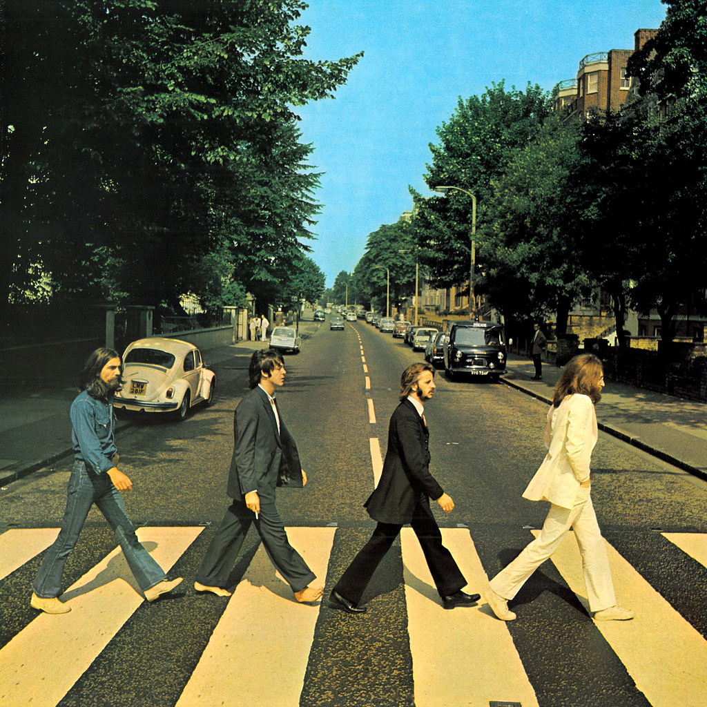
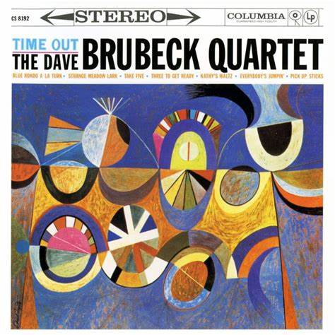
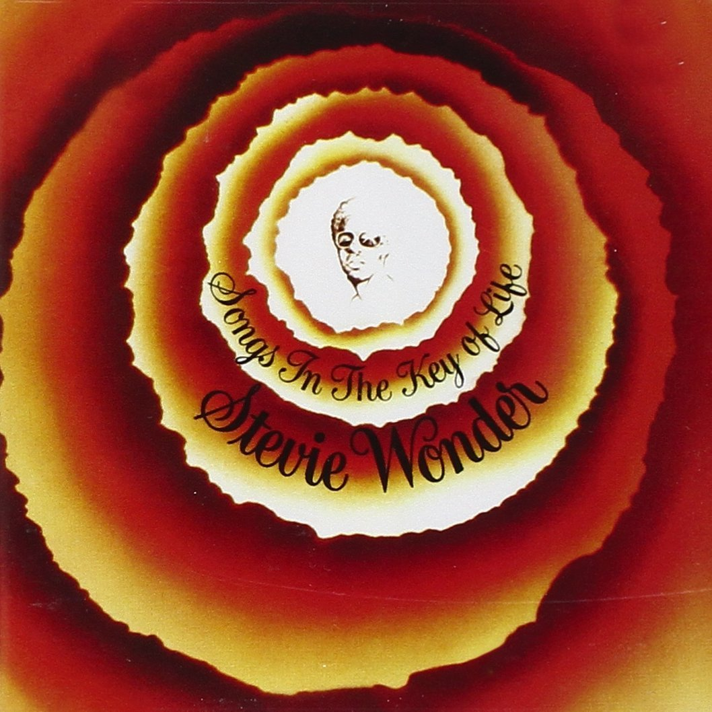
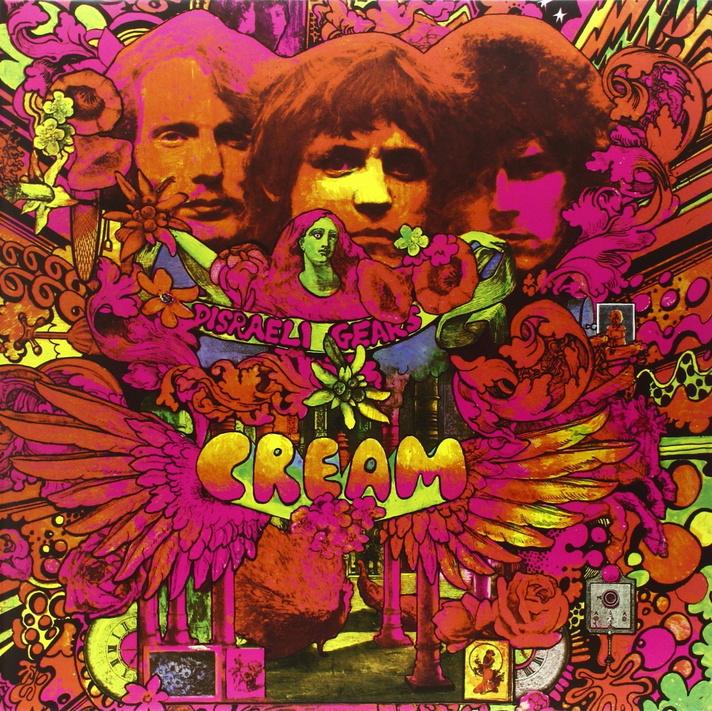

Songs in the key of life
Stevie Wonder
Este disco de 1976, lanzó a Stevie Wonder a la punta más alta de su carrera, considerado uno de los mejores albumes de los 70´s el dsico habla de temas muy vigentes como el racismo o la destrucción del medio ambiente.